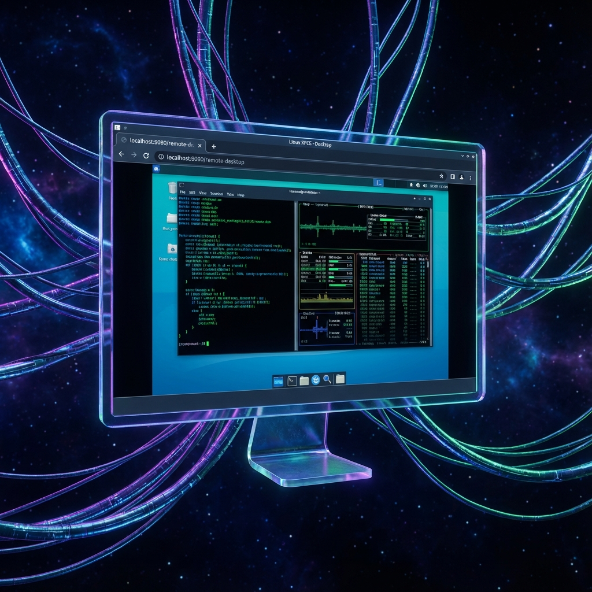
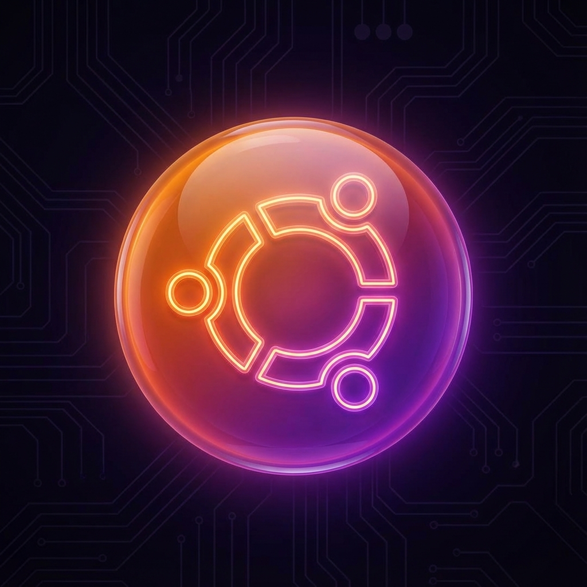
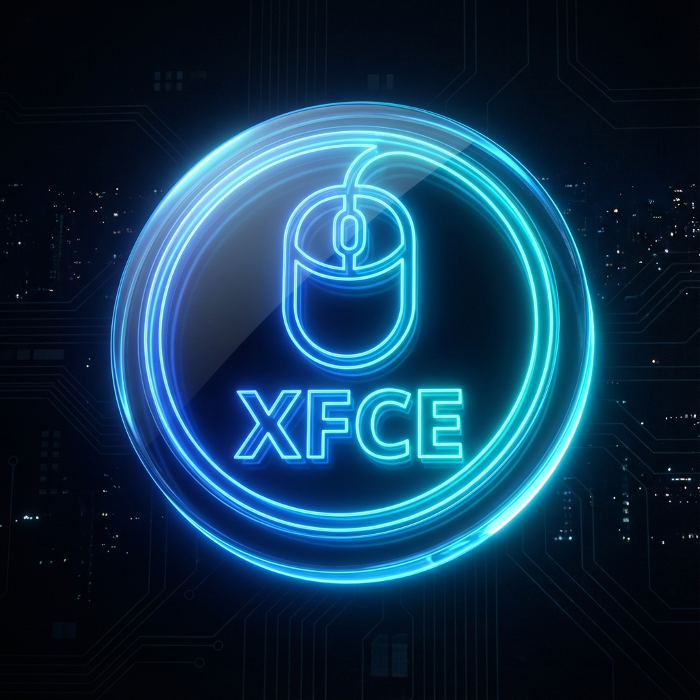
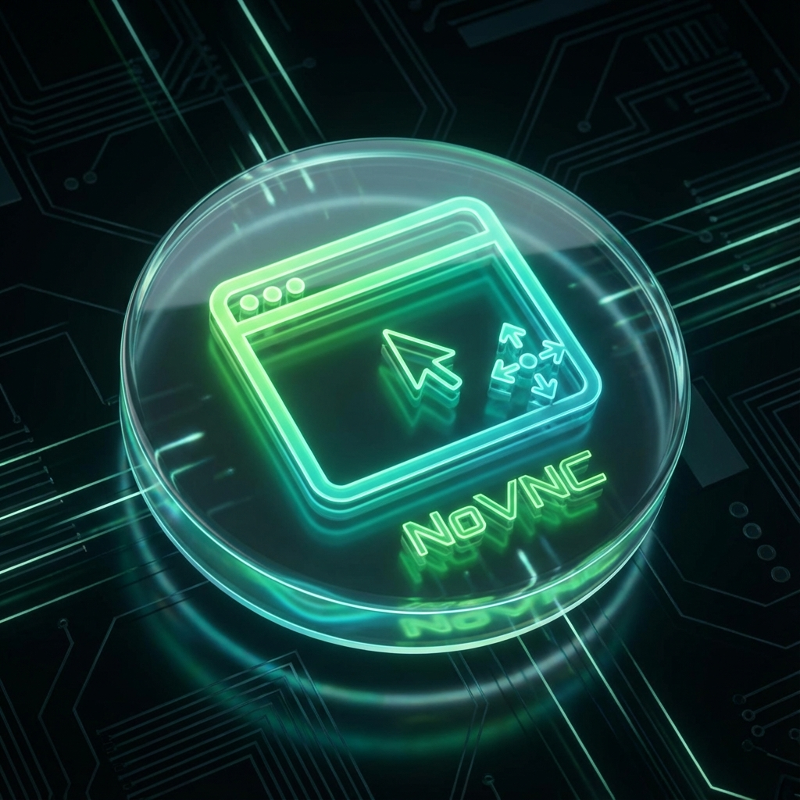
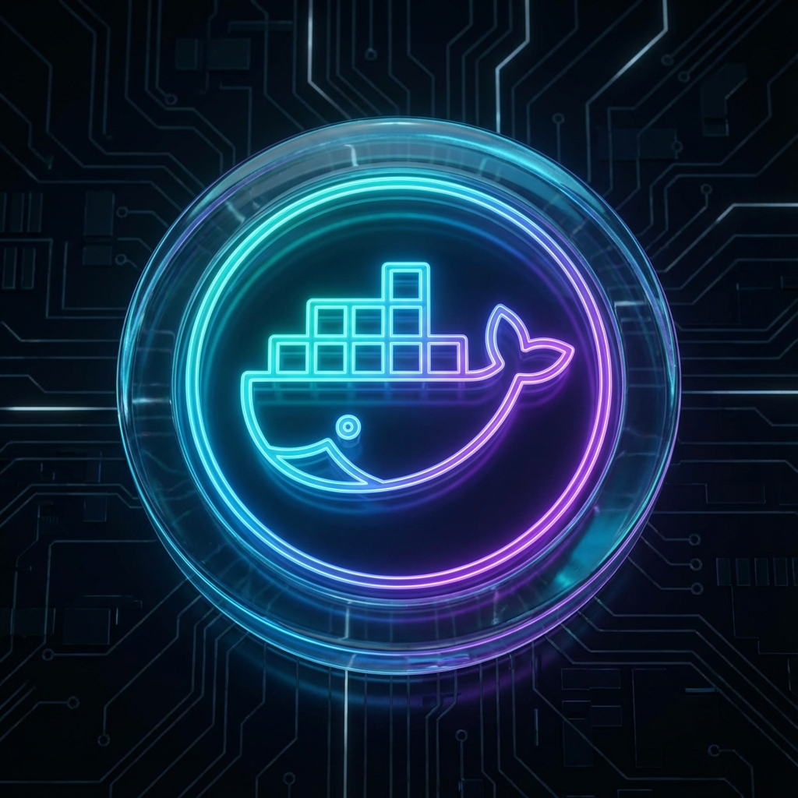

AntiGravity
The Lightweight, Web-Accessible Ubuntu Desktop.
Defy limitations. Run a full XFCE4 desktop environment inside a Docker container. Accessible anywhere via your browser.

bash
docker run -d -p 6080:6080 ghcr.io/eidolf/docker-antigravity:latest

Ubuntu 22.04 LTS
Built on a rock-solid foundation. Stable, secure, and ready for development.

XFCE4 Desktop
Lightning fast, lightweight desktop environment optimized for containerized usage.

NoVNC Access
Zero client setup. Access your full desktop environment directly from any modern web browser.

Docker-in-Docker
Full Docker daemon isolation. Run containers within your container seamlessly.